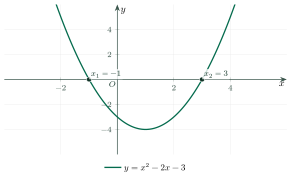

The Sign of a Quadratic TrinomialDấu của tam thức bậc hai
Grade 10 · Topic: Functions and GraphsLớp 10 · Chủ đề: Hàm số, đồ thị và ứng dụng
1Lesson IntroductionGiới thiệu bài học
Learning goalsMục tiêu bài học
By the end of this lesson you can:
Sau bài học này, em có thể:
recognise a quadratic trinomial, its roots and its discriminant;
nhận biết tam thức bậc hai, nghiệm và biệt thức của nó;
find the sign of \(f(x)=ax^2+bx+c\) with the sign theorem and a sign table;
xét dấu tam thức bậc hai bằng định lí về dấu và bảng xét dấu;
solve quadratic inequalities;
giải bất phương trình bậc hai;
use the sign of a trinomial in real problems (profit, height, conditions for all \(x\)).
vận dụng dấu tam thức vào bài toán thực tế (lợi nhuận, độ cao, điều kiện đúng với mọi \(x\)).
2Mathematical VocabularyTừ vựng Toán học
quadratic trinomial – an expression \(f(x)=ax^2+bx+c\) with \(a\ne0\).
tam thức bậc hai – biểu thức \(f(x)=ax^2+bx+c\) với \(a\ne0\).
sign table – a table showing on which intervals an expression is positive or negative.
bảng xét dấu – bảng cho biết biểu thức dương, âm trên những khoảng nào.
quadratic inequality – an inequality \(ax^2+bx+c\gt0\) (or \(\lt\), \(\ge\), \(\le\)) with \(a\ne0\).
bất phương trình bậc hai – bất phương trình dạng \(ax^2+bx+c\gt0\) (hoặc \(\lt\), \(\ge\), \(\le\)) với \(a\ne0\).
same sign as \(a\) – having the same sign (+ or −) as the leading coefficient \(a\).
cùng dấu với hệ số a – có cùng dấu (+ hoặc −) với hệ số \(a\).
3Useful English PhrasesCụm từ tiếng Anh thường gặp
The trinomial has two distinct roots.
Tam thức có hai nghiệm phân biệt.
Between the roots, \(f(x)\) has the opposite sign to \(a\).
Giữa hai nghiệm, \(f(x)\) trái dấu với \(a\).
Make a sign table.
Lập bảng xét dấu.
The solution set is the closed interval from one to four.
Tập nghiệm là đoạn \([1;4]\).
The inequality holds for every real \(x\).
Bất phương trình đúng với mọi \(x\) thực.
4Prerequisite ReviewÔn tập kiến thức nền
From Bài 16: the parabola \(y=ax^2+bx+c\) opens upward when \(a\gt0\) and downward when \(a\lt0\); it cuts \(Ox\) at the roots of \(ax^2+bx+c=0\). \(\Delta=b^2-4ac\) (or \(\Delta'=b'^2-ac\) with \(b=2b'\)).
Từ Bài 16: parabol \(y=ax^2+bx+c\) có bề lõm quay lên khi \(a\gt0\), quay xuống khi \(a\lt0\); cắt \(Ox\) tại các nghiệm của \(ax^2+bx+c=0\). \(\Delta=b^2-4ac\) (hoặc \(\Delta'=b'^2-ac\) với \(b=2b'\)).
5TheoryLý thuyết
5.1 The sign of a quadratic trinomialDấu của tam thức bậc hai
Sign theoremĐịnh lí về dấu của tam thức bậc hai
Let \(f(x)=ax^2+bx+c\) (\(a\ne0\)), \(\Delta=b^2-4ac\).
Cho \(f(x)=ax^2+bx+c\) (\(a\ne0\)), \(\Delta=b^2-4ac\).
\(\Delta\lt0\): \(f(x)\) has the same sign as \(a\) for every \(x\in\mathbb R\).
\(\Delta\lt0\): \(f(x)\) cùng dấu với \(a\) với mọi \(x\in\mathbb R\).
\(\Delta=0\): \(f(x)\) has the same sign as \(a\) for every \(x\ne-\dfrac b{2a}\); \(f\left(-\dfrac b{2a}\right)=0\).
\(\Delta=0\): \(f(x)\) cùng dấu với \(a\) với mọi \(x\ne-\dfrac b{2a}\); \(f\left(-\dfrac b{2a}\right)=0\).
\(\Delta\gt0\), roots \(x_1\lt x_2\): \(f(x)\) has the sign of \(a\) on \((-\infty;x_1)\cup(x_2;+\infty)\) and the opposite sign on \((x_1;x_2)\). Memory aid: "outside – same, inside – opposite".
\(\Delta\gt0\), hai nghiệm \(x_1\lt x_2\): \(f(x)\) cùng dấu \(a\) trên \((-\infty;x_1)\cup(x_2;+\infty)\), trái dấu \(a\) trên \((x_1;x_2)\). Ghi nhớ: "trong trái, ngoài cùng".
| \(x\) | \(-\infty\) | \(x_1\) | \(x_2\) | \(+\infty\) | |||
|---|---|---|---|---|---|---|---|
| \(f(x)\) | same sign as \(a\)cùng dấu \(a\) | 0 | opposite to \(a\)trái dấu \(a\) | 0 | same sign as \(a\)cùng dấu \(a\) |

5.2 Quadratic inequalitiesBất phương trình bậc hai một ẩn
MethodCách giải
Write the inequality as \(f(x)\gt0\) (\(\lt0\), \(\ge0\), \(\le0\)) with \(f(x)=ax^2+bx+c\).
Đưa về dạng \(f(x)\gt0\) (\(\lt0\), \(\ge0\), \(\le0\)) với \(f(x)=ax^2+bx+c\).
Find \(\Delta\) and the roots; make the sign table (or use the theorem).
Tính \(\Delta\), tìm nghiệm; lập bảng xét dấu (hoặc dùng định lí).
Read the solution set; include the roots for \(\ge\), \(\le\).
Đọc tập nghiệm; với \(\ge\), \(\le\) thì lấy cả các nghiệm.
Watch out!Lưu ý
\(ax^2+bx+c\gt0\) for every \(x\) \(\iff a\gt0\) and \(\Delta\lt0\); \(ax^2+bx+c\lt0\) for every \(x\iff a\lt0\) and \(\Delta\lt0\). Dividing by a negative number reverses the inequality sign.
\(ax^2+bx+c\gt0\) với mọi \(x\iff a\gt0\) và \(\Delta\lt0\); \(ax^2+bx+c\lt0\) với mọi \(x\iff a\lt0\) và \(\Delta\lt0\). Chia hai vế cho số âm phải đổi chiều bất phương trình.
6Worked ExamplesVí dụ có lời giải
ExampleVí dụ 1BasicCơ bản – A sign tableLập bảng xét dấu
Find the sign of \(f(x)=x^2-x-6\).
Xét dấu tam thức \(f(x)=x^2-x-6\).
Analysis: Find the roots, then use "outside – same, inside – opposite".
Phân tích: Tìm nghiệm rồi dùng quy tắc "trong trái, ngoài cùng".
\(\Delta=1+24=25\gt0\); roots \(x_1=-2\), \(x_2=3\); \(a=1\gt0\).
\(\Delta=1+24=25\gt0\); nghiệm \(x_1=-2\), \(x_2=3\); \(a=1\gt0\).
\(f(x)\gt0\) on \((-\infty;-2)\cup(3;+\infty)\); \(f(x)\lt0\) on \((-2;3)\).
\(f(x)\gt0\) trên \((-\infty;-2)\cup(3;+\infty)\); \(f(x)\lt0\) trên \((-2;3)\).
Positive outside \([-2;3]\), negative on \((-2;3)\), zero at \(-2\) and \(3\).
Dương ngoài đoạn \([-2;3]\), âm trên \((-2;3)\), bằng 0 tại \(-2\) và \(3\).
ExampleVí dụ 2BasicCơ bản – No roots or a double rootVô nghiệm hoặc nghiệm kép
Find the sign of \(g(x)=-2x^2+4x-5\) and \(h(x)=4x^2-12x+9\).
Xét dấu \(g(x)=-2x^2+4x-5\) và \(h(x)=4x^2-12x+9\).
Analysis: Compute \(\Delta'\) or \(\Delta\).
Phân tích: Tính \(\Delta'\) hoặc \(\Delta\).
\(g\): \(\Delta'=4-10=-6\lt0\), \(a=-2\lt0\Rightarrow g(x)\lt0\) for all \(x\).
\(g\): \(\Delta'=4-10=-6\lt0\), \(a=-2\lt0\Rightarrow g(x)\lt0\) với mọi \(x\).
\(h\): \(\Delta=144-144=0\); \(h(x)=(2x-3)^2\).
\(h\): \(\Delta=144-144=0\); \(h(x)=(2x-3)^2\).
\(g(x)\lt0\) for all \(x\); \(h(x)\gt0\) for all \(x\ne\frac32\), \(h\left(\frac32\right)=0\).
\(g(x)\lt0\) với mọi \(x\); \(h(x)\gt0\) với mọi \(x\ne\frac32\), \(h\left(\frac32\right)=0\).
ExampleVí dụ 3IntermediateTrung bình – Quadratic inequalitiesGiải bất phương trình bậc hai
Solve a) \(-x^2+5x-4\ge0\); b) \(2x^2-3x-2\gt0\).
Giải các bất phương trình a) \(-x^2+5x-4\ge0\); b) \(2x^2-3x-2\gt0\).
Analysis: Roots first, then the sign of \(a\).
Phân tích: Tìm nghiệm trước, rồi xét dấu của \(a\).
a) Roots 1 and 4, \(a=-1\lt0\): \(f\ge0\) between the roots, \(S=[1;4]\).
a) Nghiệm 1 và 4, \(a=-1\lt0\): \(f\ge0\) giữa hai nghiệm, \(S=[1;4]\).
b) Roots \(-\frac12\) and 2, \(a=2\gt0\): \(f\gt0\) outside, \(S=\left(-\infty;-\frac12\right)\cup(2;+\infty)\).
b) Nghiệm \(-\frac12\) và 2, \(a=2\gt0\): \(f\gt0\) ở ngoài, \(S=\left(-\infty;-\frac12\right)\cup(2;+\infty)\).
a) \([1;4]\); b) \(\left(-\infty;-\frac12\right)\cup(2;+\infty)\).
a) \([1;4]\); b) \(\left(-\infty;-\frac12\right)\cup(2;+\infty)\).
ExampleVí dụ 4IntermediateTrung bình – True for every xĐúng với mọi x
Find \(m\) so that \(x^2-2(m+1)x+m+7\gt0\) for every \(x\in\mathbb R\).
Tìm \(m\) để \(x^2-2(m+1)x+m+7\gt0\) với mọi \(x\in\mathbb R\).
Analysis: \(a=1\gt0\): need \(\Delta'\lt0\).
Phân tích: \(a=1\gt0\): cần \(\Delta'\lt0\).
\(\Delta'=(m+1)^2-(m+7)=m^2+m-6\).
\(\Delta'=(m+1)^2-(m+7)=m^2+m-6\).
\(m^2+m-6\lt0\iff-3\lt m\lt2\) (roots \(-3\), \(2\)).
\(m^2+m-6\lt0\iff-3\lt m\lt2\) (nghiệm \(-3\), \(2\)).
\(-3\lt m\lt2\).
\(-3\lt m\lt2\).
ExampleVí dụ 5AdvancedNâng cao – Choosing a priceChọn giá bán
A shop sells a T-shirt at \(x\) thousand VND. Its weekly profit is \(P(x)=-x^2+100x-1600\) (thousand VND). For which prices is the profit at least 500 thousand VND?
Một cửa hàng bán áo phông với giá \(x\) nghìn đồng. Lợi nhuận mỗi tuần là \(P(x)=-x^2+100x-1600\) (nghìn đồng). Với giá nào thì lợi nhuận ít nhất 500 nghìn đồng?
Analysis: Solve \(P(x)\ge500\).
Phân tích: Giải \(P(x)\ge500\).
\(-x^2+100x-2100\ge0\iff x^2-100x+2100\le0\).
\(-x^2+100x-2100\ge0\iff x^2-100x+2100\le0\).
Roots 30 and 70; \(a=1\gt0\): \(\le0\) between the roots.
Nghiệm 30 và 70; \(a=1\gt0\): \(\le0\) giữa hai nghiệm.
Price from 30 to 70 thousand VND (the largest profit, 900 thousand, is at 50 thousand).
Giá từ 30 đến 70 nghìn đồng (lợi nhuận lớn nhất 900 nghìn đồng khi giá 50 nghìn).
7PracticeBài tập luyện tập
A. Multiple ChoiceA. Trắc nghiệm nhiều lựa chọn
\(f(x)=x^2-3x-4\) is negative exactly on…
Tam thức \(f(x)=x^2-3x-4\) âm khi và chỉ khi \(x\) thuộc…
Answer: d. Roots \(-1\), \(4\); \(a=1\).
Đáp án d. Hai nghiệm \(-1\), \(4\); \(a=1\): trong trái, ngoài cùng.
Solve \(-x^2+7x-10\ge0\).
Giải bất phương trình \(-x^2+7x-10\ge0\).
Answer: b. Roots \(2\), \(5\); \(a=-1\).
Đáp án b. Nghiệm \(2\), \(5\); \(a=-1\).
\(x^2+2mx+4\gt0\) for all \(x\in\mathbb R\) when…
\(x^2+2mx+4\gt0\) với mọi \(x\in\mathbb R\) khi…
Answer: a. \(\Delta'=m^2-4\lt0\).
Đáp án a. \(\Delta'=m^2-4\lt0\iff-2\lt m\lt2\).
B. True or FalseB. Đúng hoặc sai
\(x^2-2x+3\gt0\) for every \(x\in\mathbb R\).
\(x^2-2x+3\gt0\) với mọi \(x\in\mathbb R\).
\(\Delta=-8\), \(a=1\).
\(\Delta=-8\), \(a=1\).
\(x=3\) is a solution of \(x^2-6x+5\lt0\).
\(x=3\) là một nghiệm của bất phương trình \(x^2-6x+5\lt0\).
\(f(3)=-4\).
\(f(3)=-4\).
C. Short AnswerC. Trả lời ngắn
How many integers satisfy \(x^2-x-6\le0\)?
Bất phương trình \(x^2-x-6\le0\) có bao nhiêu nghiệm nguyên?
Enter a number.
Nhập một số.
Solution set \([-2;\,3]\).
Tập nghiệm \([-2;\,3]\).
A ball's height is \(h(t)=-5t^2+20t+5\) (m). For how many seconds is it higher than 20 m?
Độ cao của quả bóng là \(h(t)=-5t^2+20t+5\) (m). Bóng ở cao hơn 20 m trong bao nhiêu giây?
Enter a number.
Nhập một số.
\(h(t)\gt20\iff1\lt t\lt3\): \(2\) s.
\(h(t)\gt20\iff1\lt t\lt3\): \(2\) giây.
A. Multiple ChoiceA. Trắc nghiệm nhiều lựa chọn
\(f(x)=-2x^2-2x+12\) is negative exactly on…
Tam thức \(f(x)=-2x^2-2x+12\) âm khi và chỉ khi \(x\) thuộc…
Answer: c. Roots \(-3\), \(2\); \(a=-2\).
Đáp án c. Hai nghiệm \(-3\), \(2\); \(a=-2\): trong trái, ngoài cùng.
Solve \(2x^2-4x-6\gt0\).
Giải bất phương trình \(2x^2-4x-6\gt0\).
Answer: b. Roots \(-1\), \(3\); \(a=2\).
Đáp án b. Nghiệm \(-1\), \(3\); \(a=2\).
\(x^2+2mx+9\gt0\) for all \(x\in\mathbb R\) when…
\(x^2+2mx+9\gt0\) với mọi \(x\in\mathbb R\) khi…
Answer: a. \(\Delta'=m^2-9\lt0\).
Đáp án a. \(\Delta'=m^2-9\lt0\iff-3\lt m\lt3\).
B. True or FalseB. Đúng hoặc sai
\(-x^2+4x-5\gt0\) for every \(x\in\mathbb R\).
\(-x^2+4x-5\gt0\) với mọi \(x\in\mathbb R\).
\(\Delta=-4\), \(a=-1\).
\(\Delta=-4\), \(a=-1\).
\(x=1\) is a solution of \(x^2+x-2\lt0\).
\(x=1\) là một nghiệm của bất phương trình \(x^2+x-2\lt0\).
\(f(1)=0\).
\(f(1)=0\).
C. Short AnswerC. Trả lời ngắn
How many integers satisfy \(x^2-7x+6\lt0\)?
Bất phương trình \(x^2-7x+6\lt0\) có bao nhiêu nghiệm nguyên?
Enter a number.
Nhập một số.
Solution set \((1;\,6)\).
Tập nghiệm \((1;\,6)\).
A ball's height is \(h(t)=-5t^2+15t+5\) (m). For how many seconds is it higher than 15 m?
Độ cao của quả bóng là \(h(t)=-5t^2+15t+5\) (m). Bóng ở cao hơn 15 m trong bao nhiêu giây?
Enter a number.
Nhập một số.
\(h(t)\gt15\iff1\lt t\lt2\): \(1\) s.
\(h(t)\gt15\iff1\lt t\lt2\): \(1\) giây.
A. Multiple ChoiceA. Trắc nghiệm nhiều lựa chọn
\(f(x)=-x^2+5x\) is negative exactly on…
Tam thức \(f(x)=-x^2+5x\) âm khi và chỉ khi \(x\) thuộc…
Answer: b. Roots \(0\), \(5\); \(a=-1\).
Đáp án b. Hai nghiệm \(0\), \(5\); \(a=-1\): trong trái, ngoài cùng.
Solve \(3x^2+9x-12\le0\).
Giải bất phương trình \(3x^2+9x-12\le0\).
Answer: c. Roots \(-4\), \(1\); \(a=3\).
Đáp án c. Nghiệm \(-4\), \(1\); \(a=3\).
\(x^2+2mx+16\gt0\) for all \(x\in\mathbb R\) when…
\(x^2+2mx+16\gt0\) với mọi \(x\in\mathbb R\) khi…
Answer: a. \(\Delta'=m^2-16\lt0\).
Đáp án a. \(\Delta'=m^2-16\lt0\iff-4\lt m\lt4\).
B. True or FalseB. Đúng hoặc sai
\(2x^2+x-3\gt0\) for every \(x\in\mathbb R\).
\(2x^2+x-3\gt0\) với mọi \(x\in\mathbb R\).
\(\Delta=25\), \(a=2\).
\(\Delta=25\), \(a=2\).
\(x=2\) is a solution of \(x^2-4x\lt0\).
\(x=2\) là một nghiệm của bất phương trình \(x^2-4x\lt0\).
\(f(2)=-4\).
\(f(2)=-4\).
C. Short AnswerC. Trả lời ngắn
How many integers satisfy \(x^2-x-12\le0\)?
Bất phương trình \(x^2-x-12\le0\) có bao nhiêu nghiệm nguyên?
Enter a number.
Nhập một số.
Solution set \([-3;\,4]\).
Tập nghiệm \([-3;\,4]\).
A ball's height is \(h(t)=-5t^2+30t+5\) (m). For how many seconds is it higher than 45 m?
Độ cao của quả bóng là \(h(t)=-5t^2+30t+5\) (m). Bóng ở cao hơn 45 m trong bao nhiêu giây?
Enter a number.
Nhập một số.
\(h(t)\gt45\iff2\lt t\lt4\): \(2\) s.
\(h(t)\gt45\iff2\lt t\lt4\): \(2\) giây.
D. Self-practice: Multiple ChoiceD. Tự luyện: trắc nghiệm
The discriminant of \(3x^2-x+3\) is…
Biệt thức của tam thức \(3x^2-x+3\) là…
Answer: b. \(\Delta=b^2-4ac=1-4\cdot(3)\cdot(3)\).
Đáp án b. \(\Delta=b^2-4ac=1-4\cdot(3)\cdot(3)=-35\).
For \(f(x)=-x^2+8x-15\), the sign of \(f(4)\) is…
Với \(f(x)=-x^2+8x-15\), dấu của \(f(4)\) là…
Answer: a. \(f(4)=1\).
Đáp án a. \(f(4)=1\) nên \(f(4)\) dương.
Solve \(-2x^2-4x\gt0\).
Giải bất phương trình \(-2x^2-4x\gt0\).
Answer: c. Roots \(-2\), \(0\); \(a=-2\): \(f\) has the sign of \(a\) outside \([-2;0]\).
Đáp án c. Hai nghiệm \(-2\), \(0\); \(a=-2\): \(f\) cùng dấu \(a\) ở ngoài đoạn \([-2;0]\), trái dấu \(a\) ở giữa.
Solve \(-4x^2-24x-36\le0\).
Giải bất phương trình \(-4x^2-24x-36\le0\).
Answer: a. \(\Delta=0\): \(f(x)=-4(x+3)^2\) has the sign of \(a\) except at \(x=-3\).
Đáp án a. \(\Delta=0\): \(f(x)\) cùng dấu \(a\) với mọi \(x\ne-3\).
\(x^2-2mx+4\gt0\) for every real \(x\) exactly when…
\(x^2-2mx+4\gt0\) với mọi \(x\in\mathbb R\) khi và chỉ khi…
Answer: b. \(a=1\gt0\), need \(\Delta'=m^2-4\lt0\).
Đáp án b. \(a=1\gt0\), cần \(\Delta'=m^2-4\lt0\iff-2\lt m\lt2\).
How many integers \(x\) satisfy \(x^2+x-6\le0\)?
Bất phương trình \(x^2+x-6\le0\) có bao nhiêu nghiệm nguyên?
Answer: c. Solution set \([-3;\,2]\).
Đáp án c. Tập nghiệm \([-3;\,2]\).
A workshop makes \(x\) hundred items a day; its daily profit is \(L(x)=-2x^2+36x-144\) (million VND). It does not make a loss (\(L\ge0\)) when…
Một xưởng sản xuất \(x\) trăm sản phẩm mỗi ngày, lợi nhuận \(L(x)=-2x^2+36x-144\) (triệu đồng). Xưởng không bị lỗ (\(L\ge0\)) khi…
Answer: c. Roots 6, 12; \(a\lt0\): \(L\ge0\) between the roots.
Đáp án c. Hai nghiệm 6, 12; \(a\lt0\): \(L\ge0\) giữa hai nghiệm.
A ball's height is \(h(t)=-5t^2+20t+5\) (m, \(t\) in s). It is higher than 20 m when…
Độ cao quả bóng là \(h(t)=-5t^2+20t+5\) (m, \(t\) tính bằng giây). Bóng ở cao hơn 20 m khi…
Answer: c. \(h(t)-20=-5(t-1)(t-3)\gt0\).
Đáp án c. \(h(t)-20=-5(t-1)(t-3)\gt0\).
D. Self-practice: Multiple ChoiceD. Tự luyện: trắc nghiệm
The discriminant of \(-2x^2+3x+1\) is…
Biệt thức của tam thức \(-2x^2+3x+1\) là…
Answer: c. \(\Delta=b^2-4ac=9-4\cdot(-2)\cdot(1)\).
Đáp án c. \(\Delta=b^2-4ac=9-4\cdot(-2)\cdot(1)=17\).
For \(f(x)=-3x^2-12x+15\), the sign of \(f(2)\) is…
Với \(f(x)=-3x^2-12x+15\), dấu của \(f(2)\) là…
Answer: d. \(f(2)=-21\).
Đáp án d. \(f(2)=-21\) nên \(f(2)\) âm.
Solve \(-2x^2+6x+20\lt0\).
Giải bất phương trình \(-2x^2+6x+20\lt0\).
Answer: a. Roots \(-2\), \(5\); \(a=-2\): \(f\) has the sign of \(a\) outside \([-2;5]\).
Đáp án a. Hai nghiệm \(-2\), \(5\); \(a=-2\): \(f\) cùng dấu \(a\) ở ngoài đoạn \([-2;5]\), trái dấu \(a\) ở giữa.
Solve \(-4x^2-16x-16\le0\).
Giải bất phương trình \(-4x^2-16x-16\le0\).
Answer: d. \(\Delta=0\): \(f(x)=-4(x+2)^2\) has the sign of \(a\) except at \(x=-2\).
Đáp án d. \(\Delta=0\): \(f(x)\) cùng dấu \(a\) với mọi \(x\ne-2\).
\(x^2-2mx+9\gt0\) for every real \(x\) exactly when…
\(x^2-2mx+9\gt0\) với mọi \(x\in\mathbb R\) khi và chỉ khi…
Answer: a. \(a=1\gt0\), need \(\Delta'=m^2-9\lt0\).
Đáp án a. \(a=1\gt0\), cần \(\Delta'=m^2-9\lt0\iff-3\lt m\lt3\).
How many integers \(x\) satisfy \(x^2+6x+8\lt0\)?
Bất phương trình \(x^2+6x+8\lt0\) có bao nhiêu nghiệm nguyên?
Answer: d. Solution set \((-4;\,-2)\).
Đáp án d. Tập nghiệm \((-4;\,-2)\).
A workshop makes \(x\) hundred items a day; its daily profit is \(L(x)=-x^2+8x-12\) (million VND). It does not make a loss (\(L\ge0\)) when…
Một xưởng sản xuất \(x\) trăm sản phẩm mỗi ngày, lợi nhuận \(L(x)=-x^2+8x-12\) (triệu đồng). Xưởng không bị lỗ (\(L\ge0\)) khi…
Answer: c. Roots 2, 6; \(a\lt0\): \(L\ge0\) between the roots.
Đáp án c. Hai nghiệm 2, 6; \(a\lt0\): \(L\ge0\) giữa hai nghiệm.
A ball's height is \(h(t)=-5t^2+15t+15\) (m, \(t\) in s). It is higher than 25 m when…
Độ cao quả bóng là \(h(t)=-5t^2+15t+15\) (m, \(t\) tính bằng giây). Bóng ở cao hơn 25 m khi…
Answer: b. \(h(t)-25=-5(t-1)(t-2)\gt0\).
Đáp án b. \(h(t)-25=-5(t-1)(t-2)\gt0\).
D. Self-practice: Multiple ChoiceD. Tự luyện: trắc nghiệm
The discriminant of \(x^2-x+6\) is…
Biệt thức của tam thức \(x^2-x+6\) là…
Answer: c. \(\Delta=b^2-4ac=1-4\cdot(1)\cdot(6)\).
Đáp án c. \(\Delta=b^2-4ac=1-4\cdot(1)\cdot(6)=-23\).
For \(f(x)=-3x^2+21x-36\), the sign of \(f(2)\) is…
Với \(f(x)=-3x^2+21x-36\), dấu của \(f(2)\) là…
Answer: b. \(f(2)=-6\).
Đáp án b. \(f(2)=-6\) nên \(f(2)\) âm.
Solve \(3x^2-6x-9\gt0\).
Giải bất phương trình \(3x^2-6x-9\gt0\).
Answer: d. Roots \(-1\), \(3\); \(a=3\): \(f\) has the sign of \(a\) outside \([-1;3]\).
Đáp án d. Hai nghiệm \(-1\), \(3\); \(a=3\): \(f\) cùng dấu \(a\) ở ngoài đoạn \([-1;3]\), trái dấu \(a\) ở giữa.
Solve \(9x^2+72x+144\ge0\).
Giải bất phương trình \(9x^2+72x+144\ge0\).
Answer: b. \(\Delta=0\): \(f(x)=9(x+4)^2\) has the sign of \(a\) except at \(x=-4\).
Đáp án b. \(\Delta=0\): \(f(x)\) cùng dấu \(a\) với mọi \(x\ne-4\).
\(x^2-2mx+1\gt0\) for every real \(x\) exactly when…
\(x^2-2mx+1\gt0\) với mọi \(x\in\mathbb R\) khi và chỉ khi…
Answer: b. \(a=1\gt0\), need \(\Delta'=m^2-1\lt0\).
Đáp án b. \(a=1\gt0\), cần \(\Delta'=m^2-1\lt0\iff-1\lt m\lt1\).
How many integers \(x\) satisfy \(x^2-8x+7\le0\)?
Bất phương trình \(x^2-8x+7\le0\) có bao nhiêu nghiệm nguyên?
Answer: c. Solution set \([1;\,7]\).
Đáp án c. Tập nghiệm \([1;\,7]\).
A workshop makes \(x\) hundred items a day; its daily profit is \(L(x)=-x^2+14x-40\) (million VND). It does not make a loss (\(L\ge0\)) when…
Một xưởng sản xuất \(x\) trăm sản phẩm mỗi ngày, lợi nhuận \(L(x)=-x^2+14x-40\) (triệu đồng). Xưởng không bị lỗ (\(L\ge0\)) khi…
Answer: b. Roots 4, 10; \(a\lt0\): \(L\ge0\) between the roots.
Đáp án b. Hai nghiệm 4, 10; \(a\lt0\): \(L\ge0\) giữa hai nghiệm.
A ball's height is \(h(t)=-5t^2+15t+10\) (m, \(t\) in s). It is higher than 20 m when…
Độ cao quả bóng là \(h(t)=-5t^2+15t+10\) (m, \(t\) tính bằng giây). Bóng ở cao hơn 20 m khi…
Answer: d. \(h(t)-20=-5(t-1)(t-2)\gt0\).
Đáp án d. \(h(t)-20=-5(t-1)(t-2)\gt0\).
8Common MistakesLỗi thường gặp
Forgetting the sign of \(a\). \(-x^2+5x-4\ge0\) holds between the roots because \(a\lt0\).
Quên xét dấu của \(a\). \(-x^2+5x-4\ge0\) đúng giữa hai nghiệm vì \(a\lt0\).
Brackets for \(\ge\), \(\le\). The roots belong to the solution set: use \([\ ]\), not \((\ )\).
Dùng sai ngoặc với \(\ge\), \(\le\). Nghiệm của tam thức thuộc tập nghiệm: dùng \([\ ]\), không dùng \((\ )\).
\(\Delta\lt0\) means "no solution". Not always: \(x^2+1\gt0\) holds for every \(x\); only \(x^2+1\lt0\) has no solution.
Nghĩ \(\Delta\lt0\) là "vô nghiệm". Không phải lúc nào cũng vậy: \(x^2+1\gt0\) đúng với mọi \(x\); chỉ \(x^2+1\lt0\) mới vô nghiệm.
Writing \(S=(3;-2)\). Write the smaller root first: \((-2;3)\).
Viết \(S=(3;-2)\). Nghiệm nhỏ viết trước: \((-2;3)\).
9Lesson SummaryTổng kết
\(\Delta\lt0\): \(f\) has the sign of \(a\) everywhere; \(\Delta=0\): sign of \(a\) except at the double root.
\(\Delta\lt0\): \(f\) luôn cùng dấu \(a\); \(\Delta=0\): cùng dấu \(a\) trừ tại nghiệm kép.
\(\Delta\gt0\): "outside – same, inside – opposite" (to the sign of \(a\)).
\(\Delta\gt0\): "trong trái, ngoài cùng" (so với dấu của \(a\)).
\(ax^2+bx+c\gt0\ \forall x\iff a\gt0,\ \Delta\lt0\).
\(ax^2+bx+c\gt0\ \forall x\iff a\gt0,\ \Delta\lt0\).
Key words: quadratic trinomial, discriminant, sign table, quadratic inequality.
Từ cần nhớ: quadratic trinomial, discriminant, sign table, quadratic inequality.